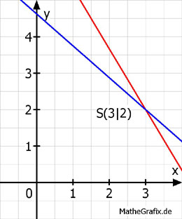

Lineare Gleichungssysteme Aufgabe 62 Bestimmen Sie den Schnittpunkt der Geraden. 5x + 3y = 21 (1) 7x + 8y = 37 (2) (1) nach y umgestellt 5x + 3y = 21 | -5x 3y = -5x + 21 | :3 5 y = - --- x + 7 3 (2) nach y umgestellt 7x + 8y = 37 | -7x 8y = -7x + 37 |: 8 7 37 y = - --- x + ----- 8 8 y = y 5 7 37 - --- x + 7 = - --- x + ----- | * Hauptnenner 24 3 8 8 - 40x + 168 = - 21x + 111 |+ 40x 168 = 19x + 111 |-111 57 = 19x | :19 x = 3 x in (1) eingesetzt 5 * 3 + 3y = 21 15 + 3y = 21 | -15 3y = 6 | :3 y = 2 